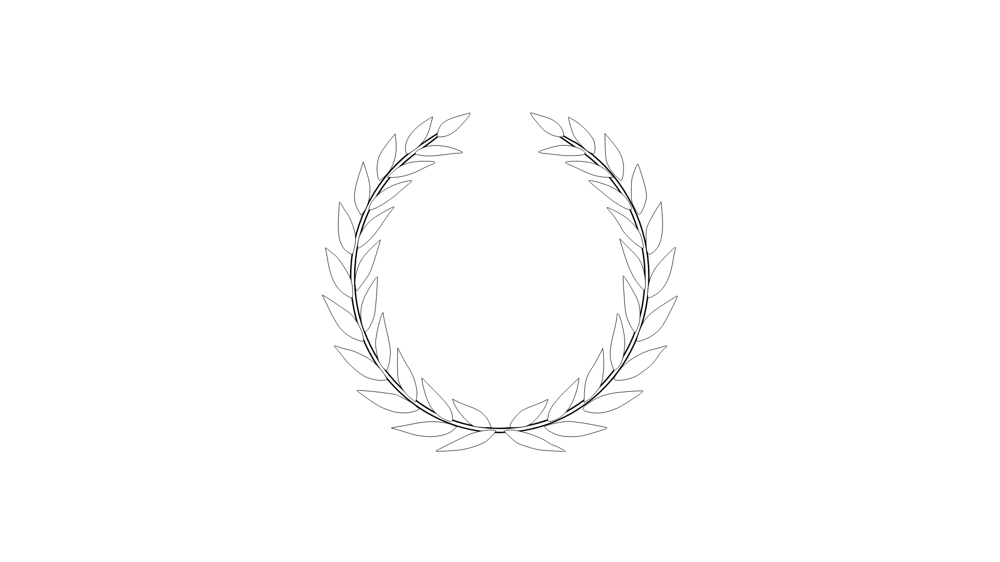

PRD
Praetorian Reconnaissance Division
Overview
The eyes and ears of the Praetorian Defense Corps. PRD operates deep in hostile territory gathering critical battlefield intelligence that shapes command decisions and dictates the outcome of every engagement. Where others react, we anticipate.
Our Mission
To conduct forward recon and intelligence operations — providing PDC High Command with accurate, timely, and actionable intelligence ahead of the main force. We observe, report, and enable decisive action.
Primary Responsibilities
- Forward Reconnaissance: Advance ahead of PDC forces to observe, assess, and report on enemy positions, movements, and terrain.
- Intelligence Gathering: Collect and relay critical intelligence to inform command-level decisions and operational planning.
- Target Acquisition: Identify and mark high-value targets and enemy infrastructure for follow-on forces and air assets.
- HVT Elimination: Locate, track, and neutralize high-value targets designated by High Command. Precision and discretion are paramount — no trace, no loose ends.
- Precision Fires: Deploy designated marksmen to engage and eliminate priority targets, providing accurate and lethal sniper support to the main force.
- Area Assessment: Evaluate ground conditions, chokepoints, and enemy presence within assigned AOs.
Additional Information
PRD personnel operate with high independence. Candidates must be disciplined, patient, and capable in small teams under minimal supervision behind enemy lines.
For inquiries or further details, contact Divisional Staff.
See First. Report Fast. Strike True.